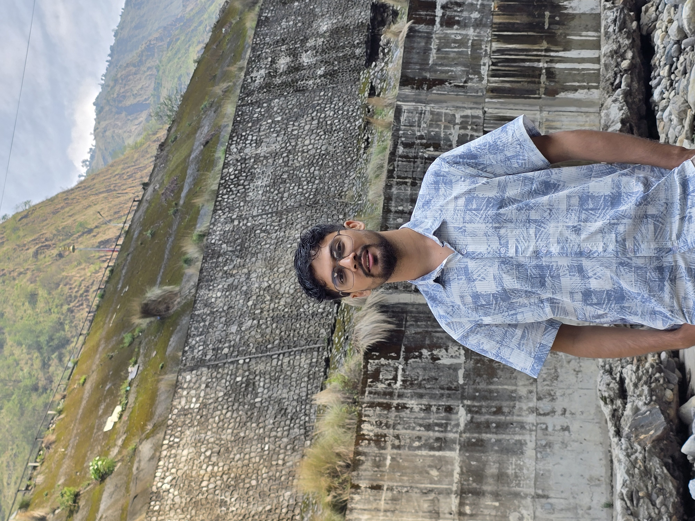

Software Engineer at LogPoint Inc.

LogPoint | July 2025 - Present
LogPoint | May 2024 - Present
LogPoint | February 2022 - April 2024
LogPoint Inc. / Tribhuvan University | 2025
Texas International College | 2025
Whitehouse Education Zone, Bharatpur, Nepal | 2017 (6 months)
Independent Project | 2024
Developed a Redis server using Tokio, an asynchronous Rust library, complete with comprehensive tests.
Final Year Major Project | 2021/2022
Developed a machine learning model for estimating vehicle velocity using optical flow, depth, and position as features. Implemented the model using PyTorch.
Artificial Intelligence Project | 2021/2022
Built a self-learning agent that learns to play Cart Pole game using Q-learning, Actor-Critic, and Policy Gradient. Used PyTorch as the machine learning library.
Third Year Project | 2020/2021
Developed a Rent Management mobile app using React Native and Firebase. Implemented a user-friendly platform that allows tenants and owners to easily find and manage rental properties.
Data Structures and Algorithms Project | 2018/19
Created graphical visualizations for Binary Search Tree and Linked List operations including node addition, deletion, and traversal using C++ and SFML.
C++ Project | 2018
Computer Engineering | 2017-2022 | Aggregate percentage: 74.19
+2 Science / High School | 2015-2017 | Aggregate percentage: 86.4
Grade X | 2015 | Percentage: 88.25
Achieved 7th rank out of 18,000 candidates nationwide, placing in the top 0.04 percentile.
Awarded a prestigious merit-based scholarship by the Indian government for high-achieving students across South Asia.
(Verbal: 160, Quantitative: 164)
(Reading: 30, Listening: 27, Speaking: 23, Writing: 23)